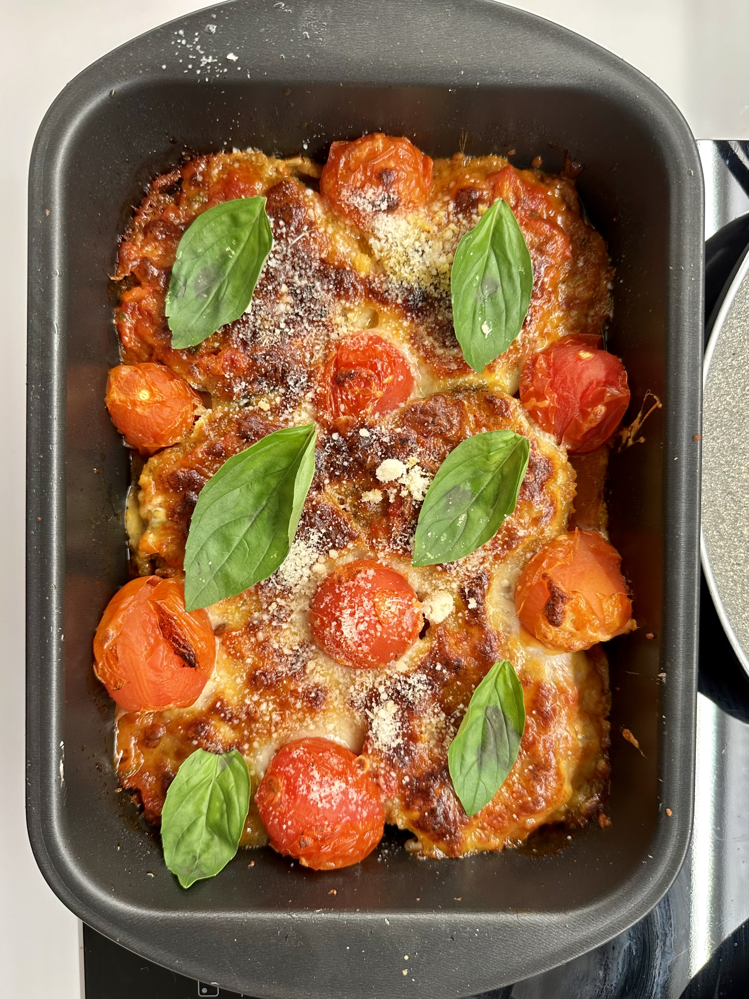
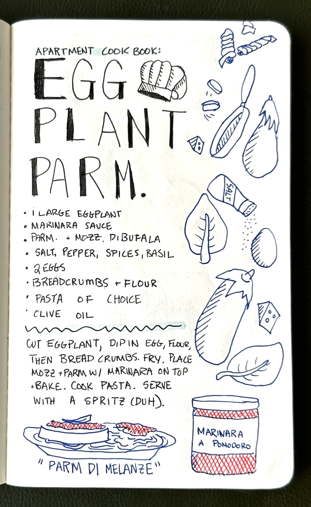

Ingredients
- 1 large eggplant, sliced
- 1/2 cup all-purpose flour
- 1 teaspoon salt
- 1/2 teaspoon black pepper
- 1 egg, beaten
- 1/2 cup bread crumbs
- 1/4 cup grated Parmesan cheese
- 1/4 cup olive oil
- 1 (24-ounce) jar marinara sauce
- 1 cup shredded mozzarella cheese
Recipe
- Preheat the oven to 375 degrees F (190 degrees C).
- Cut eggplant into thick steaks: about 1”. Sprinkle with salt and let dry for 10 minutes, then wipe off salt.This dries out the eggplant.
- In a bowl, mix flour, salt, and pepper.
- In another bowl, beat 1 egg.
- In a third bowl, combine bread crumbs and (a lot of) Parmesan cheese.
- Dip eggplant slices in flour mixture, then egg, then bread crumb mixture.
- In a large skillet, heat olive oil over medium heat.
- Fry eggplant slices until golden brown, about 2 minutes per side.
- Place eggplant slices in a greased 9x13 inch baking xdish.
- Top with marinara sauce and mozzarella cheese. Place whole grape tomatoes on the inside.
- Bake for 20 minutes, or until the cheese is melted, bubbly, and brown.
- Serve immediately. Sprinkle extra cheese.
Credits
This recipe is from A Simple Plate
Reference Images



Reference Sites - Recipes
- Hendrick's Gin is a great example of the use of illustrated elements for web. I am hoping to build off of this and make my own illustrations in that style for this project.
- Badr Food plays with how the user interacts with the ingredients. I love the way the typography and photo elements interact -- hoping to bring some of that into my own site.
- Simply Recipe's isn't necisarily layed out in the best way -- I want to play wiht the layout better than they did. However, I really like the small illustrated elements and the yellow callout boxes - it's a great way to add some voice to the website. I could do this by making those callouts with stuff about the extra cheese, different ways of cooking, etc.
Reference Sites - General
- Apple's iPad Site is anoter great example of the use of abstracting parts of the visual elements to show what goes into the product/recipe. I love the way that the elements move as you scroll -- I would love to mimic that if we learn how in
- The LA Olympic Website has a really strong layout that uses all available parts of the screen. I want to play off of this layout for my own designs. It also has some great illustrated examples.
- Taylor Swift's website feels like it's on a piece of paper, and I really like the illustrated feel of it (sensing a pattern in these answers).